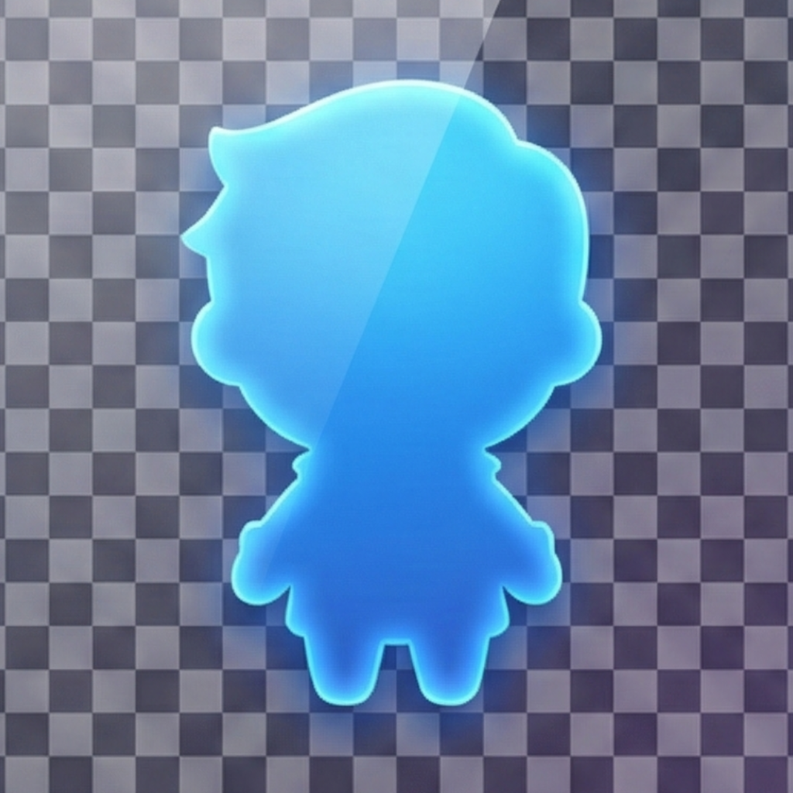

推しを、
そばに。
デスクトップアクスタアプリ for macOS
Apple Silicon・Intel Mac 両対応（ユニバーサルバイナリ）
好きな画像を、アクリルスタンドのようにデスクトップに飾れるアプリ。推しのキャラクター、アイドル、ペット、家族——いつでも目に入る場所に、お気に入りを。

特長
「飾る」に特化した、軽くてシンプルなアプリ
いつでも最前面に
透明な背景で画像だけをデスクトップに表示。常に最前面、すべての仮想デスクトップに対応しています。
好きな画像を自由に
PNG・JPEG・GIF・TIFF・HEICに対応。好きな画像を何枚でも登録して、気分に合わせて切り替えられます。
直感的な操作
ドラッグで移動、スクロールでサイズ変更、回転や透明度もパネルから調整。右クリックメニューですべての操作にすぐアクセスできます。
好きなだけ並べて飾れる
同時に複数の画像を表示できます。重ね順の管理やOptionキー一括操作で、自由にレイアウト。
位置・サイズ・画像・回転・透明度・重ね順は自動保存。アップデートもアプリ内から確認できます。
使い方
かんたん3ステップで、すぐに飾れます
インストールして起動
Homebrewでワンコマンド。起動するとメニューバーにアイコンが現れ、デスクトップに画像が表示されます。
brew install --cask shiroemons/tap/sobani
または Sobani-universal.dmg を直接ダウンロードすることもできます。
お気に入りの画像に差し替える
メニューバーから「デフォルト画像を変更...」を選んで、好きな画像を設定するだけ。
右クリック →「表示画像の変更」で、画像の追加登録や切り替えもできます。
💡 ヒント: 透過処理されたPNG画像を使うと、背景なしで画像だけが表示されます。
💡 ヒント: アニメーションGIFやアニメーションPNG（APNG）も表示できます。動く推しをそばに飾りましょう。
好きなように配置する
ドラッグで移動、スクロールでサイズ変更。
右クリックから「画像を追加表示」で画像を増やしたり、「表示の調整」で回転・透明度・左右反転を調整したり。自由にデスクトップを飾りましょう。
💡 ヒント: Optionキーを押しながら操作すると、すべてのウィンドウをまとめて動かせます。
使用例
実際の動作をご覧ください
他のデスクトップマスコットとの違い
Sobaniは「画像を飾る」ことに特化した、アクリルスタンド型のアプリです
| Sobani | 一般的なデスクトップマスコット | |
|---|---|---|
| コンセプト | デスクトップアクスタ（静的表示） | 動くキャラクター・対話型 |
| 画像 | 自分の好きな画像を自由に設定 | アプリ固有のキャラクター |
| 表示方式 | 静止画特化 — 軽量で安定 | アニメーション（歩く・踊る等） |
| 設計思想 | 画像を飾ることに集中 | AI・対話・会話機能 |
| リソース消費 | 極めて軽量 | 中〜高 |
| 外部依存 | ゼロ | ランタイム・ライブラリ等 |
| 複数画像の同時表示 | 対応 | アプリによる |
推しを、そばに置こう。
ネイティブSwift製。ゼロ依存で驚くほど軽い。
macOS 13.0（Ventura）以降 ／ Apple Silicon・Intel Mac 両対応（ユニバーサルバイナリ）
手動インストール手順
- 1ダウンロードした DMG ファイルを開く
- 2Sobani.app をアプリケーションフォルダにドラッグ＆ドロップする
- 3Sobani.app を起動する（初回は右クリック →「開く」）
または Homebrew でインストール
brew install --cask shiroemons/tap/sobani